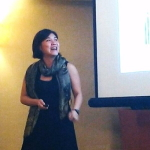

MD4SG Tutorial @ ACM EC 2020
EC'20 Tutorial
Time: June 25 & 26, 2020
Place: Virtual
This tutorial will bring to bear tools from economics and computer science on a core problem of social good provision of goods to vulnerable populations. By definition, forms of vulnerability such as poverty preclude access to goods through normal market channels. Without intervention, this can be ruinous individually and greatly suboptimal socially. Universal provision is one often-touted solution, but can be costly and inefficient. Consequently, more targeted approaches are common, but must contend with lack of priors about the population of interest. We survey the rich mechanism design and machine learning questions inherent in the most prevalent approaches to this unique resource allocation problem and suggest directions for future work from the EC community.
Organized by: Sera Linardi and Sam Taggart
This tutorial will bring to bear tools from economics and computer science on a core problem of social good: provision of goods to vulnerable populations. By definition, forms of vulnerability such as poverty preclude access to goods through normal market channels. Without intervention, this can be ruinous individually and greatly suboptimal socially. Universal provision is one often-touted solution, but can be costly and inefficient. Consequently, more targeted approaches are common, but must contend with lack of priors about the population of interest. We survey the rich mechanism design and machine learning questions inherent in the most prevalent approaches to this unique resource allocation problem and suggest directions for future work from the EC community.
Topics:
- Session 1A: Introduction. Targeting Toolbox. Proxy Means Testing. Community-Based Targeting. [Video, Slides]
- Session 1B: Self-targeting. Ordeal-based targeting. In-kind provision. [Video, Slides]
- Session 2A: Consequences of behavioral theories. [Video, Slides]
- Session 2B: Algorithmic issues in information acquisition. Strategic classification. Bayesian learning in networks. [Video, Slides]
Logistics
Target Audience
The tutorial will be self-contained, and designed for students and researchers in computer science and economics without assuming previous knowledge of public / social service provision. It will emphasize applications of tools from machine learning and mechanism design in promoting social good. The audience will be exposed to potentially new models from economics and theoretical computer science which capture key issues in provision. The discussion of empirical work will illustrate the complexities of practical implementation, highlight the importance of experimentation to understanding relevant factors for vulnerable populations in particular, and suggest potential for further theoretical work.
Pre-recording will take place over the course of two days.
- Session 1: Thursday June 25, 11-11:45am and 12-12:45pm Eastern
- Exercise Session: Thursday June 25, 3-4pm Eastern
- Session 2: Friday June 26, 11-11:45am and 12-12:45pm Eastern
EC tutorial watch parties will take place on July 13.
Registration
You have to register for the ACM EC Conference to participate in this tutorial. Please register here. Note, registration is free with a SIGecom membership ($5 for students and $10 for others).
References
Session 1A:
- Adams, Alayne M., Timothy G. Evans, Rafi Mohammed, and Jennifer Farnsworth. "Socioeconomic stratification by wealth ranking: Is it valid?." World Development (1997)
- Alatas, Vivi, Ririn Purnamasari, Matthew Wai-Poi, Abhijit Banerjee, Benjamin A. Olken, and Rema Hanna. "Self-targeting: Evidence from a field experiment in Indonesia." Journal of Political Economy (2016)
- Alatas, Vivi, Abhijit Banerjee, Rema Hanna, Benjamin A. Olken, and Julia Tobias. "Targeting the poor: evidence from a field experiment in Indonesia." American Economic Review (2012)
- Alderman, Harold. "Do local officials know something we don't? Decentralization of targeted transfers in Albania." Journal of Public Economics (2002)
- Currie, Janet, and Firouz Gahvari, "Transfers in cash and in-kind: Theory meets the data." Journal of Economic Literature (2008)
- Dworczak, Piotr, Scott Duke Kominers, and Mohammad Akbarpour. "Redistribution through Markets." EC (2018)
- Hanna, Rema, and Benjamin A. Olken. "Universal basic incomes versus targeted transfers: Anti-poverty programs in developing countries." Journal of Economic Perspectives (2018)
- Karlan, Dean, and Bram Thuysbaert. "Targeting ultra-poor households in Honduras and Peru." The World Bank Economic Review (2019).
Session 1B:
- Alatas, Vivi, Ririn Purnamasari, Matthew Wai-Poi, Abhijit Banerjee, Benjamin A. Olken, and Rema Hanna. "Self-targeting: Evidence from a field experiment in Indonesia." Journal of Political Economy (2016)
- Kleven, Henrik Jacobsen, and Wojciech Kopczuk. "Transfer program complexity and the take-up of social benefits." American Economic Journal: Economic Policy (2011)
- Mkandawire, Thandika. "Targeting and universalism in poverty reduction." United Nations Research Institute for Social Development. (2005)
Session 2A:
- Bhargava, Saurabh, and Dayanand Manoli. "Psychological frictions and the incomplete take-up of social benefits: Evidence from an IRS field experiment." American Economic Review (2015)
- Carvalho, Leandro S., Stephan Meier, and Stephanie W. Wang. "Poverty and economic decision-making: Evidence from changes in financial resources at payday." American Economic Review (2016)
- Dohmen, Thomas, Armin Falk, David Huffman, Uwe Sunde, Jurgen Schupp, and Gert G. Wagner. "Individual risk attitudes: Measurement, determinants, and behavioral consequences." Journal of the European Economic Association (2011)
- Falk, Armin, Anke Becker, Thomas Dohmen, Benjamin Enke, David Huffman, and Uwe Sunde. "Global evidence on economic preferences." The Quarterly Journal of Economics (2018)
- Fong, Christina M., and Felix Oberholzer-Gee. "Truth in giving: Experimental evidence on the welfare effects of informed giving to the poor." Journal of Public Economics (2011)
- Haushofer, Johannes, Daniel Schunk, and Ernst Fehr. "Negative income shocks increase discount rates." Working paper. (2019)
- Incekara-Hafalir, Elif, and Sera Linardi. "Awareness of low self-control: Theory and evidence from a homeless shelter." Journal of Economic Psychology (2017).
- Linardi, Sera, and Nita Rudra. "Globalization and Willingness to Support the Poor in Developing Countries: An Experiment in India." Comparative Political Studies (2020)
- Mani, Anandi, Sendhil Mullainathan, Eldar Shafir, and Jiaying Zhao. "Poverty impedes cognitive function." Science (2013)
- Madrian, Brigitte C., and Dennis F. Shea. "The power of suggestion: Inertia in 401 (k) participation and savings behavior." The Quarterly Journal of Economics (2001)
- Petersen, Michael Bang, Daniel Sznycer, Leda Cosmides, and John Tooby. "Who deserves help? Evolutionary psychology, social emotions, and public opinion about welfare." Political Psychology (2012)
- Tanaka, Tomomi, Colin F. Camerer, and Quang Nguyen. "Risk and time preferences: Linking experimental and household survey data from Vietnam." American Economic Review (2010)
Session 2B:
- Alatas, Vivi, Abhijit Banerjee, Arun G. Chandrasekhar, Rema Hanna, and Benjamin A. Olken. "Network structure and the aggregation of information: Theory and evidence from Indonesia." American Economic Review (2016).
- Alatas, Vivi, Abhijit Banerjee, Rema Hanna, Benjamin A. Olken, and Julia Tobias. "Targeting the poor: evidence from a field experiment in Indonesia." American Economic Review (2012)
- Blundell, Richard, and Hilary W. Hoynes. "Has' In-Work' Benefit Reform Helped the Labor Market?" In Seeking a Premier Economy: The Economic Effects of British Economic Reforms, 1980-2000, University of Chicago Press (2004).
- Friedberg, Leora. "The labor supply effects of the social security earnings test." Review of Economics and Statistics (2000)
- Hardt, Moritz, Nimrod Megiddo, Christos Papadimitriou, and Mary Wootters. "Strategic classification." ITCS (2016).
- Hu, Lily, Nicole Immorlica, and Jennifer Wortman Vaughan. "The disparate effects of strategic manipulation." FAT* (2019)
- Maestas, Nicole, Kathleen J. Mullen, and Alexander Strand. "Does disability insurance receipt discourage work? Using examiner assignment to estimate causal effects of SSDI receipt." American Economic Review (2013)
- Milli, Smitha, John Miller, Anca D. Dragan, and Moritz Hardt. "The social cost of strategic classification." FAT* (2019).
Organizers
Sera Linardi, University of Pittsburgh

Sera Linardi is an experimental economist and an associate professor of Economics at Graduate School of Public and International Affairs at the University of Pittsburgh. She holds a PhD in Social Science from California Institute of Technology and is the founding director of Center for Analytical Approaches to Social Innovation (CAASI), which builds interdisciplinary research teams to work on practical problems faced by organizations. She is a co-organizer of the 2020 NSF/CEME Decentralization conference on Mechanism Design for Vulnerable Populations. Her research focuses on the two ends of service provision: donor altruism and client utilization, with field experiments on homelessness and reintegration services. She is currently funded by the NSF, Heinz Foundation, Rapoport Foundation, and the Integrative Social Science Research Initiative.
Email: linardi@pitt.edu
Sam Taggart, Oberlin College
Sam Taggart is assistant professor of computer science at Oberlin College. He is co-organizer of the Mechanism Design for Social Good working group on inequality. His research interests lie at the intersection of theoretical computer science and microeconomic theory. Specific interests include applications of tools from mechanism design, statistical learning, and theoretical computer science to problems of social import, the interaction between economic incentives and statistical learning and in obtaining theoretical performance guarantees for practical resource allocation protocols such as the first-price auction. He holds a PhD in Computer Science from Northwestern University.
Email: samuelptaggart@gmail.com
Support: Rediet Abebe, Irene Lo, and Ana-Andreea Stoica